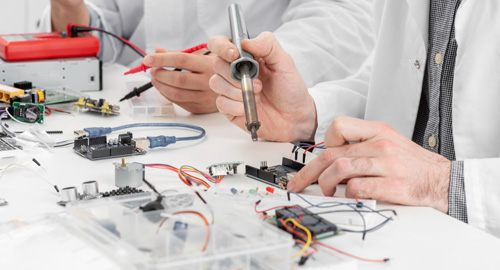

home > 인재채용 > 직무소개
직무소개
삼성SDI의 다양한 직무를 소개합니다
본인의 전공, 관심분야에 따른 업무분야를 확인해 보세요.
6가지 직무
-

- 소재/셀 개발
- 전지/전자재료 제품과 제품별 성능에 따른 핵심소재 및 차세대 혁신 소재를 개발하는 직무
- 역할: 전지 소재·전지 극판·전지 기종·전자재료 소재 개발과 전지/전자재료 평가 및 분석
-

- 모듈/팩 개발
- 전지 모듈 및 팩의 기계 구조와 전기 회로를 설계하고 검증하는 직무
- 역할: 모듈/팩 기구 및 회로설계와 시뮬레이션
-
- SW 개발
- 프로그래밍 및 SW 관련 지식을 바탕으로 제품 관련 시스템을 개발/운영하는 직무
- 역할: 시스템 개발(SW) 및 모듈/팩 SW 설계
-
- 공정/설비 설계 및 제어
- 신공법/신설비 개발로 생산성을 향상시키고 각종 설비의 최적화로 양산성을 극대화, 품질을 개선하는 직무
- 역할: 전지/전자재료의 공법개발 및 설비설계·품질관리·공정 및 설비 운영
-
- 영업마케팅
- 시장과 제품, 고객에 대한 이해를 바탕으로 제품 전략, 포트폴리오를 구축하고 고객과의 원활한 커뮤니케이션을 통해 판매를 촉진하는 직무
- 역할: 마케팅 및 군내/해외 영업
-

- 경영지원
- 기획, 인사, 구매, 재무관리, 경영관리 등 경영진의 의사결정을 지원해 주는 업무
- 역할: 기획·인사·재무관리·경영관리·구매
직무 요건
| 직무 | Requirements |
|---|---|
| 소재/셀 개발 | 화학/화공, 재료/금속, 섬유/고분자, 수학, 물리 관련 전공자 전지 및 전자재료 기본 원리 및 소재/셀 개발 관련 지식 보유자 직무와 연관된 경험 보유자 (프로젝트, 논문, 특허, 경진대회 등) |
| 모듈/팩 개발 | 전기전자(H/W), 기계, 수학, 물리 관련 전공자 전지 모듈/팩의 전기 회로·기계 설계 및 모델링/시뮬레이션 관련 지식 보유자 직무와 연관된 경험 보유자 (프로젝트, 논문, 특허, 경진대회 등) |
| SW 개발 | 전산/컴퓨터, 전기전자, 산공, 기계, 수학, 통계(이공), 물리 등 이공계 전공자 프로그래밍 언어 및 알고리즘 관련 지식 보유자 직무와 관련된 공인 자격 또는 경험(프로젝트, 논문, 특허, 경진대회 등) 보유자 |
| 공정/설비 설계 및 제어 | 화학/화공, 재료/금속, 섬유/고분자, 기계, 전기전자(H/W), 산업공학, 수학, 물리 관련 전공자 직무와 연관된 경험 보유자 (프로젝트, 논문, 특허, 경진대회 등) |
| 영업마케팅 | 고객 및 해외 법인과의 커뮤니케이션을 위한 외국어 회화 역량 보유자 영업마케팅 직무 관련 지식 보유자 전지 및 전자재료 산업과 제품에 대한 이해도가 높은 자 직무와 연관된 경험 보유자 (프로젝트, 논문, 특허, 경진대회 등) |
| 경영지원 | 기획, 인사, 재무관리, 경영관리, 구매 등 직무 관련 역량 보유자 직무와 관련된 공인 자격 또는 경험(프로젝트, 논문, 특허, 경진대회 등) 보유자 |